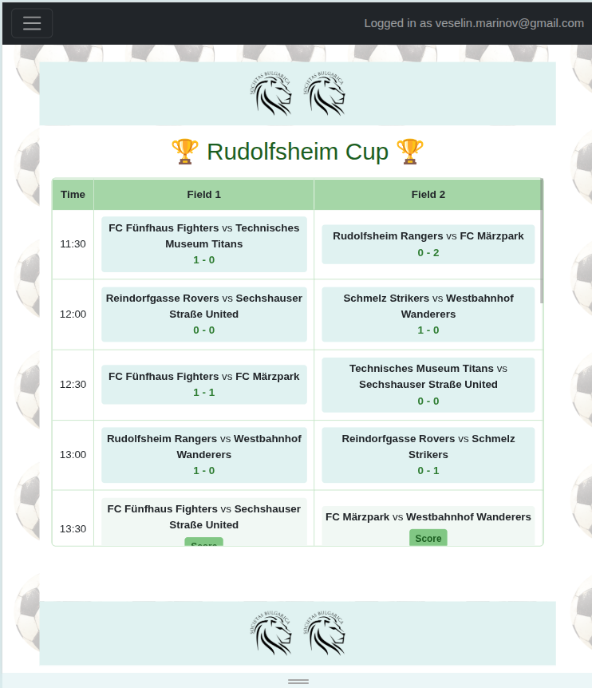
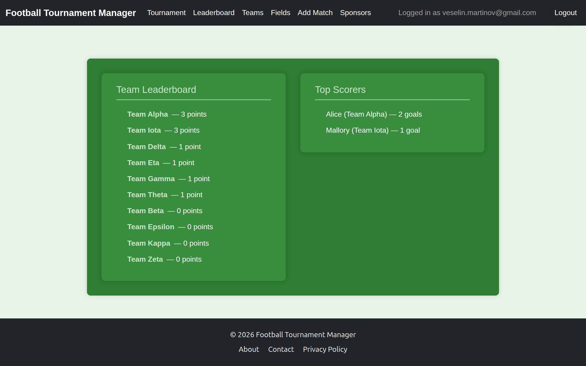
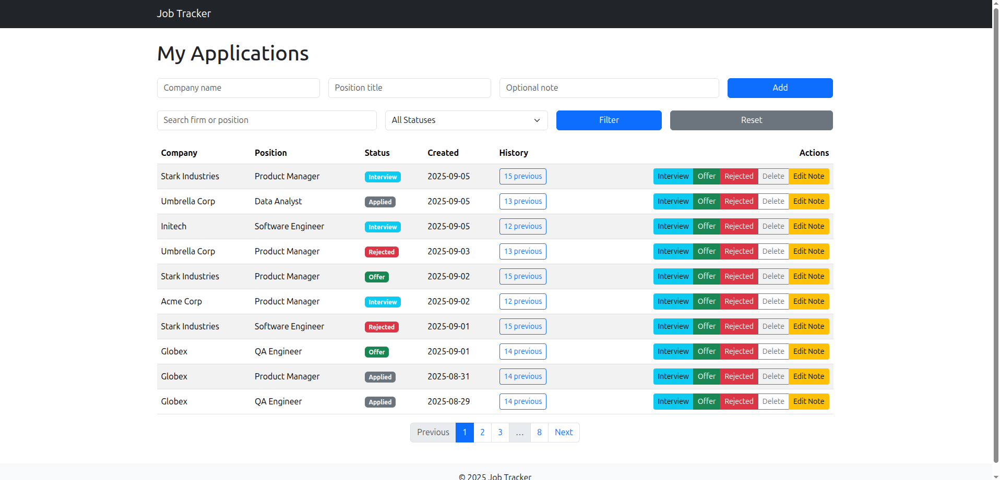
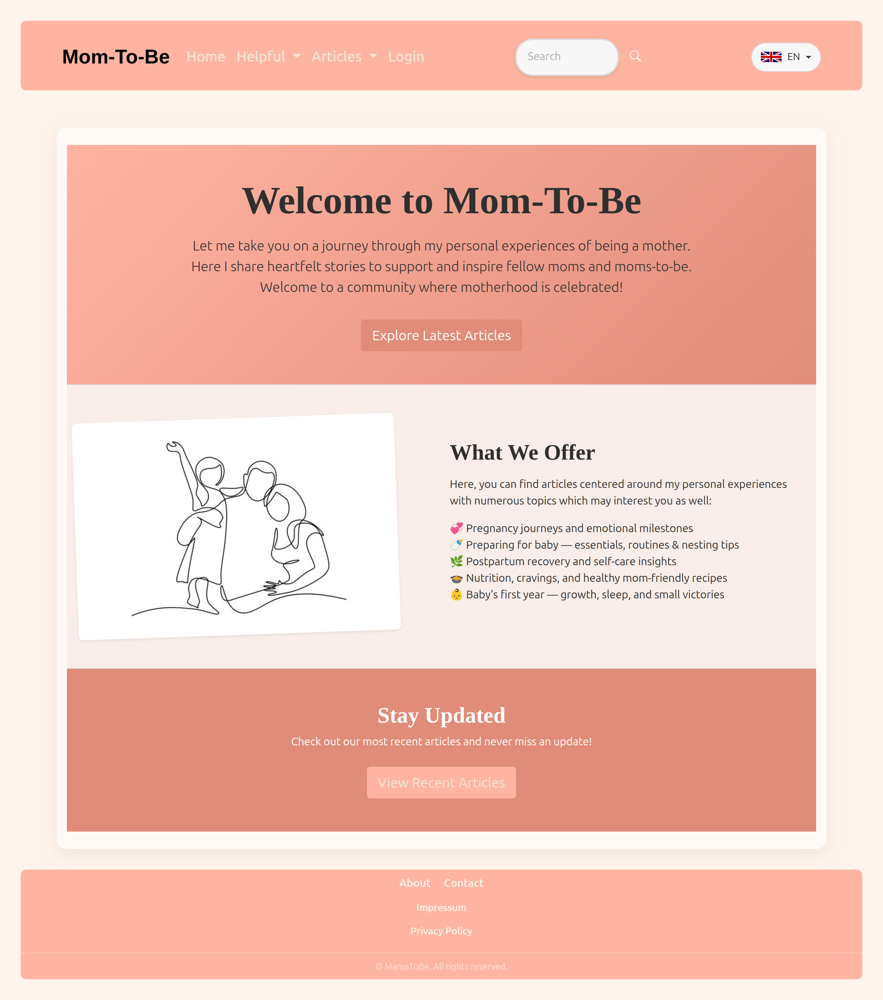

TournamentManager


TournamentManager is a web application built to automate the organization and execution of small-scale football tournaments. The project originated from an annual competition where match results were entered manually into a basic scoring tool, and final rankings, top scorers, and standings were calculated by hand after the event — a process that took significant time and was prone to errors.
The application supports round-robin tournaments with teams playing parallel matches on multiple fields. Organizers can create tournaments through a guided workflow, automatically generate match schedules, enter scores, and track standings in real time. A dedicated public view allows players and spectators to follow match results and rankings live, while sensitive information such as top-scorer tracking remains restricted to organizers.
On the backend, the system handles score validation, automatic point calculation, tie-breaking rules, and dynamic ranking updates after each match. The data model was designed to reflect real-world constraints such as unknown player identities at registration time, duplicate names across teams, and event-based tracking for goals and cards. Match events are stored per player and team, with business logic to correctly handle edge cases like own goals and automatic red cards after two yellow cards.
The application is built with Django and PostgreSQL and is deployed publicly. Tournament-specific sponsor banners are uploaded and served from Azure Blob Storage, providing visibility for sponsors throughout the event. The project includes unit tests for core models as well as integration tests to ensure data consistency and correct ranking calculations under real tournament conditions.
TournamentManager is used annually by several hundred users during live events. The project significantly reduced administrative overhead for organizers and provided a more transparent and engaging experience for participants and spectators. It was a key learning experience in data modeling, UX decisions under time pressure, and building maintainable backend systems for real-world usage.
Tech: Python · Django · PostgreSQL · Azure Blob Storage · HTML · CSS · JavaScript · Testing
ApplicationJobTracker

ApplicationJobTracker is a personal job-application management tool designed to centralize and streamline the job-hunting process. The project was built to avoid duplicate applications, track application statuses, and keep structured notes for interview preparation, while also providing visibility into new relevant job postings.
The application allows users to track companies, positions, application dates, statuses, and custom notes, with search and filtering capabilities based on company name, role, or application state. This makes it easier to manage follow-ups, prepare for upcoming interviews, and maintain a clear overview during an active job search.
In addition to manual tracking, the system includes a web-scraping component built with BeautifulSoup that retrieves new junior Python job postings from karriere.at. Scraping can be triggered automatically once per day or manually on demand. Retrieved postings are displayed temporarily, allowing the user to discard irrelevant listings, which are stored in a local blacklist to prevent repeated scraping of unwanted entries.
The backend is implemented with Flask and SQLAlchemy, backed by PostgreSQL, and fully containerized using Docker. Flask serves a built React frontend, which is currently being extended with an additional view to track time spent on projects and tasks. The application is designed as a local-only tool without authentication, emphasizing separation of concerns between scraping logic, application state, and user interface.
ApplicationJobTracker is actively used during my job search and serves as an ongoing learning project. It reinforced best practices around data modeling, containerized development workflows, and clean separation between backend services, automation tasks, and frontend presentation.
Tech: Python · Flask · SQLAlchemy · PostgreSQL · Docker · React · BeautifulSoup
Mom-To-Be

Mom-To-Be is a live, production web application developed as a commissioned project for a non-technical primary user. It began as a personal blogging platform and has evolved into a content-driven site with extensible features, including a cookbook and forum components currently under active development. The project places strong emphasis on usability, maintainability, and adapting to continuously evolving requirements.
The application supports full content management workflows, including creating, editing, drafting, and publishing articles with categories, tags, and media uploads. Content is authored using a TinyMCE-based editor and is fully multilingual, allowing posts to be published in multiple languages. Comments are planned as an upcoming feature. Registration is intentionally kept simple and is handled on-site, while Django’s admin interface is customized and used for moderation and maintenance tasks.
Architecturally, the project is structured into multiple Django apps handling articles, profiles, shared components, food-related content, and a forum module. Each article is linked to an author profile and includes automatic timestamping and language-aware slug generation. Django signals are used to create related user profiles on registration, while middleware and libraries such as TinyMCE, django-parler, and modeltranslation support rich content editing and multilingual functionality. The project uses a mix of class-based and function-based views, leveraging each where most appropriate for clarity, authorization handling, and reduced overhead.
The application is deployed on Render and currently runs on the free tier with a dedicated PostgreSQL instance. Earlier iterations relied on SQLite with JSON-based data seeding as a workaround for free-tier limitations, an approach that was later removed once persistent database support became available. The project includes a CI/CD pipeline in which changes to the development branch trigger automated tests and, upon success, are automatically deployed to production via a Docker container.
Mom-To-Be is developed in close collaboration with its primary user, resulting in frequent iterations, feature revisions, and UI adjustments based on real feedback. The project has been a key learning experience in requirement gathering, architectural planning, and accepting change as a core part of software engineering. It represents my first end-to-end commissioned project and significantly shaped how I plan, design, and evolve applications before and during implementation.
Tech: Python · Django · PostgreSQL · Docker · CI/CD · TinyMCE · django-parler · modeltranslation · HTML · CSS · JavaScript